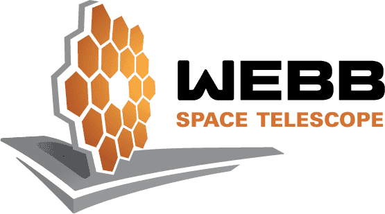

Webb's Science Mission Begins
We wonder. It’s our nature. How did we get here?
Are we alone in the universe? How does the universe work?
The James Webb Space Telescope is an ambitious scientific endeavor to answer these questions. Webb builds on the legacy of previous space-based telescopes to push the boundaries of human knowledge even further, to the formation of the first galaxies and the horizons of other worlds.
Explore the universe with Webb.